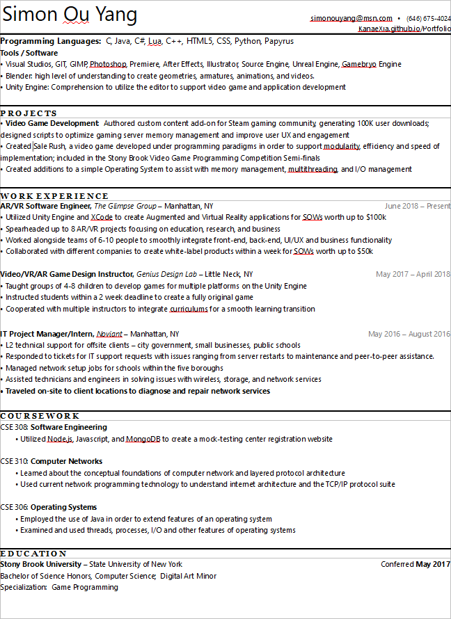

About Me
As you may already know, my name is Simon Ou Yang. I am an undergraduate student studying at Stony Brook University; I am currently in my last semester of my undergraduate career, and I am looking for an entry level full-time job. Before proceeding to more extraneous details, below one can see the more important points through my resume:

In addition to my resume, I have a handful of interests.
In my free time, I like to utilize my skills in both the scripting and modelling environment by creating new rigged models for use in Garry's Mod, and create new character scripts for Don't Starve. In both these hobbies I consistently practice my ability to employ Blender as a modelling software, and Lua as a scripting language.
Another interest of mine is art. I first began sketching and basic drawings on November 11th of 2011, where I was first introduced to a series of cartoons that were popular at the time. Throughout the time up until even today I have vowed to draw at least one thing every day; with this conviction my skills have improved considerably from since I started. This experience extended my ability to visualize characters and objects in a 3D space, despite drawing on a 2D surface; this was extremely helpful during my progressive learning of making models in Blender. Lastly, I am familiar with animation; already I have made several traditional animations, albeit they are very rough and were constructed a while ago. This can all be seen in the different pages of this website.
While it may not be as imperative as the skills listed above, nor relevant to any procedures: I am extremely confident in my abilities of playing DanceDanceRevolution; please play with me...